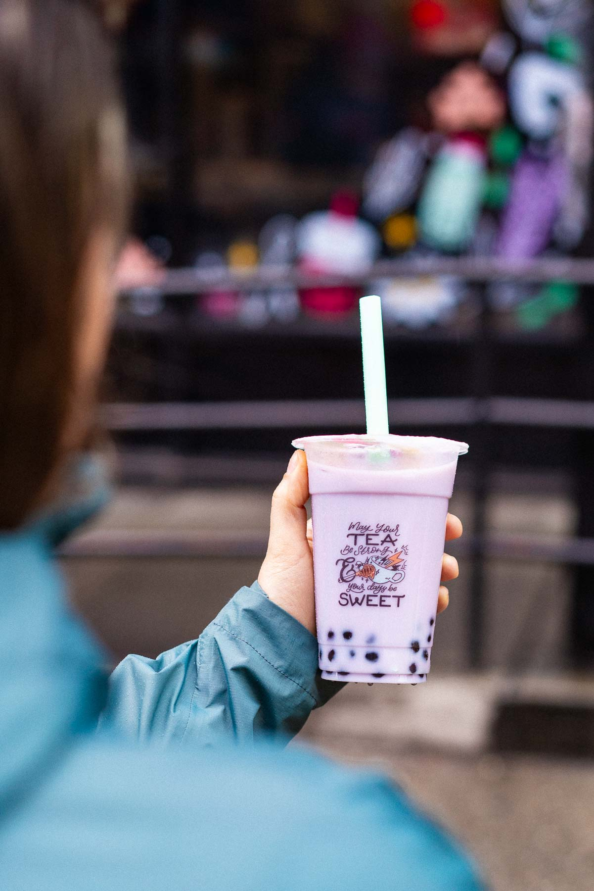
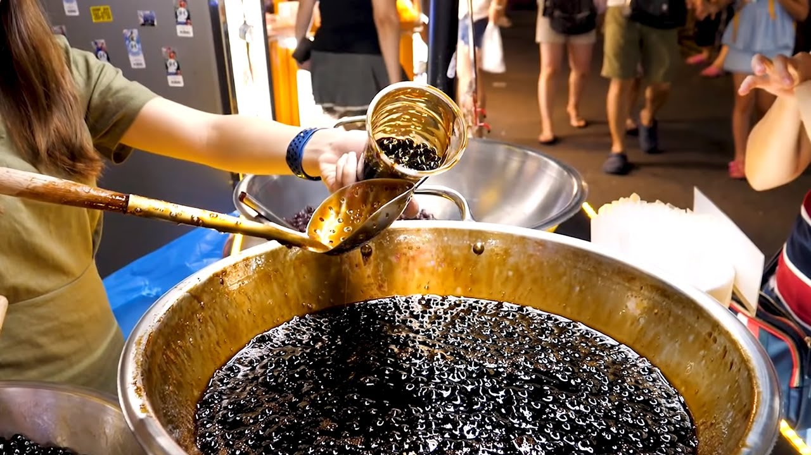

Bubble tea, also known as boba tea, is a popular drink made with tea, chewy tapioca pearls, and a selection of other toppings. It comes in a variety of flavors, both fruity and milky, and can be served cold or hot.
Bubble tea originated in Taiwan during the 1980s. Its unique texture and flavour quickly gained popularity across Asia. The drink reached the UK in the early 2000s, growing steadily in popularity, especially among younger generations.
